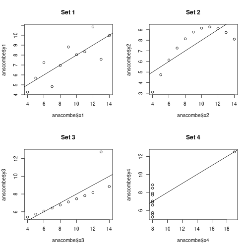

Suppose you have checked your linear-regression assumptions (linearity, normal residuals, independence), and they hold. Suppose you reject the hypothesis \(a_1 = 0\). It is still not necessarily the case that \(x_1\) influences \(y\) in a causal way.
This is “correlation does not imply causation.” We have used this phrase informally — let’s go through the alternatives explicitly.
The data looks like:
y
| /
| /
| /
| /
| /
+--------------- xYou drew a line through the data, estimated \(\hat y = a_0 + a_1 x\) with \(a_1 > 0\), and rejected \(a_1 = 0\). Now, you should resist saying “x causes y.” It might be that y is causing x.
Worked example: life expectancy and GDP per capita. The story we told was: if you’re richer, you have more money, you spend more on health care, so life expectancy is higher. That is causal: GDP → life expectancy.
But the story could go the other way. Maybe if you know you live longer, you work harder at your job, and therefore GDP is higher. That is: life expectancy → GDP. From the data alone you cannot tell.
It might be that neither \(x\) causes \(y\) nor \(y\) causes \(x\), but a third variable causes both.
For life expectancy and GDP per capita, what is a common cause? Let’s make something up.
There might be a causal chain, but it is very indirect. For example: GDP per capita correlates with being a member of the World Health Organization (which costs a country some dues), and being a WHO member gives access to programs that improve health. The causal effect of GDP on life expectancy is real but routed through a long path; you wouldn’t read it off the slope of the line.
Sometimes correlation is just a coincidence. The classic meme example:
Pirates vs Global average temperature: positively related.The number of pirates has decreased over the centuries; global temperatures have increased. Plot one against the other and you get a positive correlation. Arguably a coincidence.
Or it might be a Type I error: with a 5% threshold, you reject inappropriately 5% of the time. If you tested 20 random pairs of variables, on average you’d find one “correlation” that is just luck.
Informally we said “correlation does not imply causation.” Technically we have not defined correlation yet, except to say it is “kind of like a line that goes through the data.” Here is one way to define correlation.
Let’s say you’re trying to predict \(y\) from \(x\). The simplest thing you can do is predict the average value every time: \(\hat y = \bar y\). The next simplest is linear regression: \(\hat y = a_0 + a_1 x\).
R² is basically a comparison between how well you can do if you just predict the average every time vs how well you can do with linear regression.
Let’s compute the sum of squared errors for both:
Define:
\[R^2 = 1 - \frac{\text{SSE}_{\text{model}}}{\text{SSE}_{\text{baseline}}}.\]
This ratio is always positive (well, \(0 \le R^2 \le 1\) when the model is at least as good as the baseline), because you can always set \(a_1 = 0\) and recover the baseline. If \(R^2\) is close to 1, the model is much better than the baseline → strong linear trend. If \(R^2\) is close to 0, the model is no better than the baseline → no linear trend.
In R, calling summary() on an lm fit prints the full regression summary. The \(R^2\) appears near the bottom on the line beginning with Multiple R-squared.
library(gapminder)
library(dplyr)
gap_1982 <- gapminder %>% filter(year == 1982)
model <- lm(log(lifeExp) ~ log(gdpPercap), data = gap_1982)
summary(model)##
## Call:
## lm(formula = log(lifeExp) ~ log(gdpPercap), data = gap_1982)
##
## Residuals:
## Min 1Q Median 3Q Max
## -0.36815 -0.05800 0.00552 0.06273 0.26010
##
## Coefficients:
## Estimate Std. Error t value Pr(>|t|)
## (Intercept) 3.052654 0.059810 51.04 <2e-16 ***
## log(gdpPercap) 0.126601 0.007132 17.75 <2e-16 ***
## ---
## Signif. codes: 0 '***' 0.001 '**' 0.01 '*' 0.05 '.' 0.1 ' ' 1
##
## Residual standard error: 0.103 on 140 degrees of freedom
## Multiple R-squared: 0.6924, Adjusted R-squared: 0.6902
## F-statistic: 315.1 on 1 and 140 DF, p-value: < 2.2e-16Look at the Multiple R-squared line above — that is the \(R^2\) for this fit. You can also pull it out programmatically:
summary(model)$r.squared## [1] 0.6923848If \(y\) is being predicted from a single \(x\), the correlation \(r\) is the signed square root of \(R^2\). The sign matches the sign of \(a_1\): positive if the trend is upward, negative if downward.
So “\(r\) close to ±1” means strong linear relationship; “\(r\) close to 0” means no linear trend.
A famous warning about R² (and correlation). There are four data sets, all with the same \(r \approx 0.816\):
data(anscombe)
par(mfrow = c(2, 2))
plot(anscombe$x1, anscombe$y1, main = "Set 1"); abline(lm(y1 ~ x1, data = anscombe))
plot(anscombe$x2, anscombe$y2, main = "Set 2"); abline(lm(y2 ~ x2, data = anscombe))
plot(anscombe$x3, anscombe$y3, main = "Set 3"); abline(lm(y3 ~ x3, data = anscombe))
plot(anscombe$x4, anscombe$y4, main = "Set 4"); abline(lm(y4 ~ x4, data = anscombe))
par(mfrow = c(1, 1))They look completely different.
A large correlation could be all of those things. Always visualize.
A small correlation also doesn’t really tell you much by itself: there could be a strong non-linear relationship that the linear \(r\) doesn’t capture.
Here’s one floating around Twitter that the lecturer brought up: \(r = 0.23\), but the points are essentially a featureless cloud. You would not say there is a “weak linear relationship” — the picture says there is no relationship.
The take-away: \(r\) is a number computed from a formula. The formula returns a number even when the picture says “no signal.” Look at the picture.
Summary of how to do regression carefully:
If you do all of that, you can say something like: “We rejected the null that \(a_1 = 0\) at the 5% level; consistent with a positive association between \(x\) and \(y\); we cannot rule out reverse causation or confounding.”